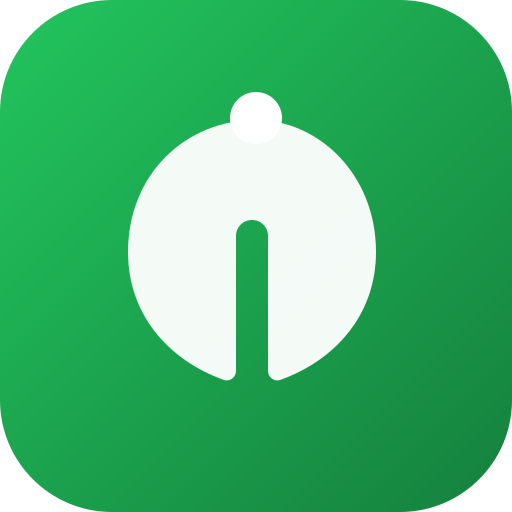

Sağlık Takip
Başlatılıyor…
Bugünün dengesi
Beslenme
✦
‹
Bugün
›
🔍
⧉ Dünü kopyala
Gücünü takip et
Antrenman
↗
‹
Bugün
›
▤ Program
⧉ Önceki antrenmanı kopyala
🔍
Kişisel alanın
Ayarlar
⌁
Günlük kalori hedefi
Makro oranları (%)
Protein
Karbonhidrat
Yağ
Kaydet
Veriler cihazında (IndexedDB) saklanır. İnternet olmadan da çalışır. Hesabın açıksa değişikliklerin güvenli biçimde bulutla eşitlenir.
Paketli ürün verileri kısmen
Open Food Facts
katkıcılarından alınmıştır (ODbL lisansı).
Beslenme
Antrenman
Ayarlar